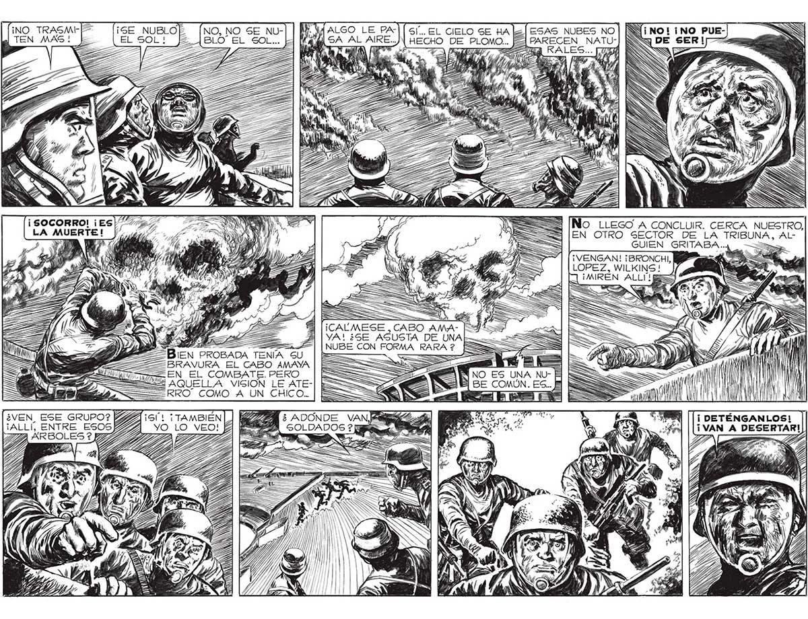

¡NO TRASM|+ TEN MAS! o | ¡ SOCORRO! ¡ES / 2/57 LA MUERTE! Ji ed A UA e PS CNEA NS 7% AS A 57% UY / ( h y Lg! pl AN > ( 4 ) 0 ARA , , > y) Z ] S > , e , S pa Sr e ; S AS (LEY y p, A su h ) 7 A 5 / 7 7 e he vo y a + hn 17 MS xQ Mile Y ¿VEN, ESE GRUPO? 14G4 151! ¡TAMBIEN| ] ki ¡ALLÍ, ENTRE ESOSB2234_vOo Lo veo! £ TE ARBOLES? Pp A ls ES NO, NO SE NU-] Ñ A», JP ALSO 1: 22222 A PROBADA TENIA SU == BRAVURA EL CABO AMAYA _= EN EL COMBATE. PERO Y AQUELLA VISION LE ATE=== RRO COMO A UN CHICO... ES eS == OS: === Pa = A === Ss ¡CAUMESE ,CABO AMA-. VA! ¿SE ASUSTA DE UNAL—— NUBE CON FORMA RARA 2 q $ aj esas NUBES NO | NJ¡ 121 E PARECEN NATU-| ¡Ss Ea No LLEGO A CONCLUIR. CERCA NUESTRO, EN OTRO SECTOR DE LA TRIBUNA, ALGUIEN GRITABA... ===> ¡VENGAN! ¡BRONCHI, LOPEZ, WILKINS ! ¡MIREN ALLI! ¿ ADONDE VANE e, ==" | UN HI! py! j MI ETÉNGANLOS! A DESERTAR!)
